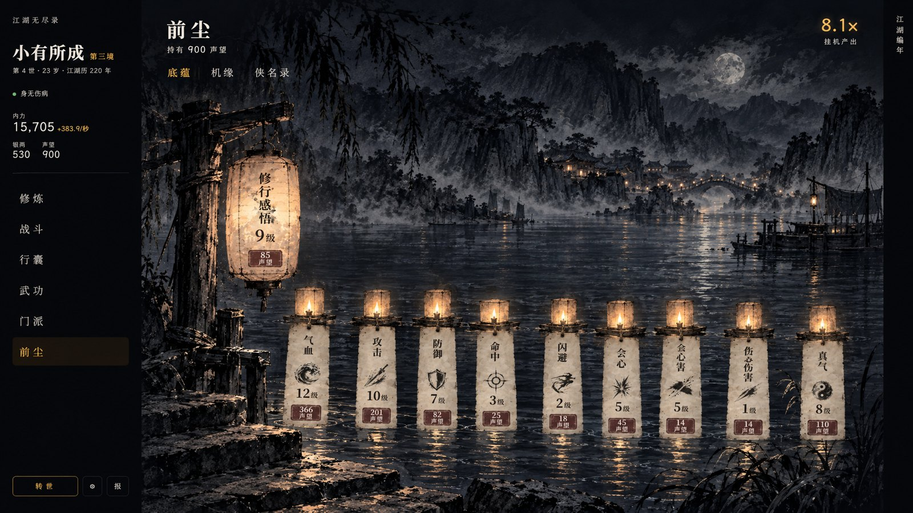
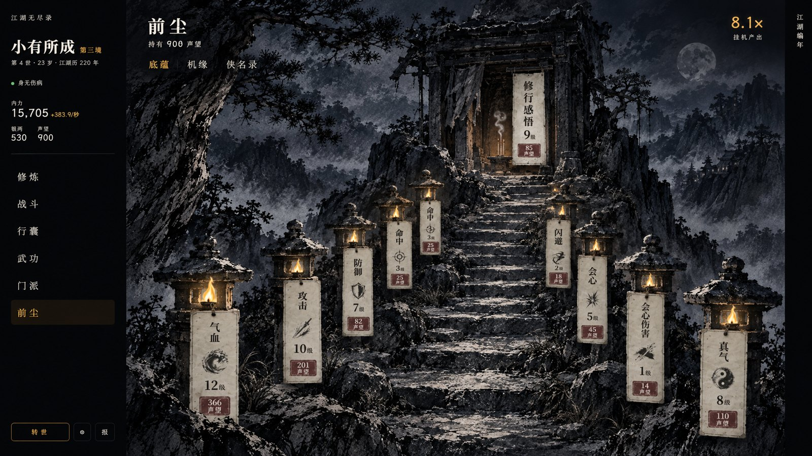
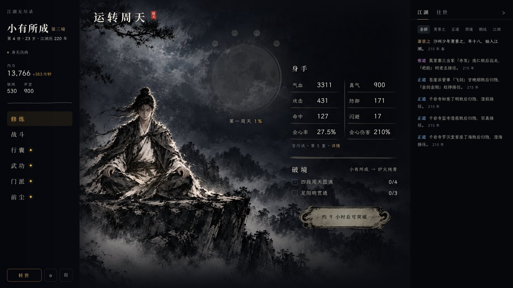
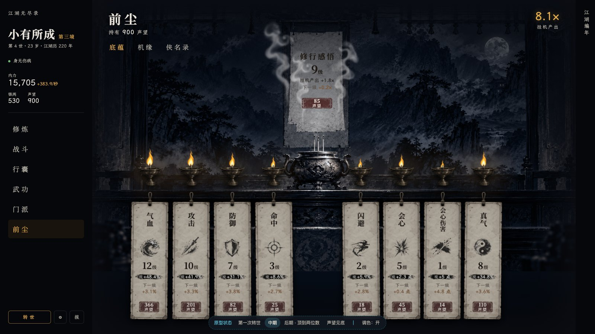

前尘 · 重绘方向（以底蕴为例，画中文字为 AI 所写，只看构图与画风）
 丙 · 墨中往世（推荐）整页一幅水墨，往世身影（僧、儒、剑客）淡入山水；八张题签一字排开最好读；修行感悟是右侧悬幅与香炉
丙 · 墨中往世（推荐）整页一幅水墨，往世身影（僧、儒、剑客）淡入山水；八张题签一字排开最好读；修行感悟是右侧悬幅与香炉

甲 · 江上灯大江夜色，八盏河灯随级数变亮，码头大灯笼为修行感悟；前尘如流水

乙 · 山径石灯修炼那座山上的山径与小祠，石灯笼夹道；近大远小，远处几张签偏小难读

参照 · 修炼页画风基准

现状 · 灵台（方案 A 调色后）